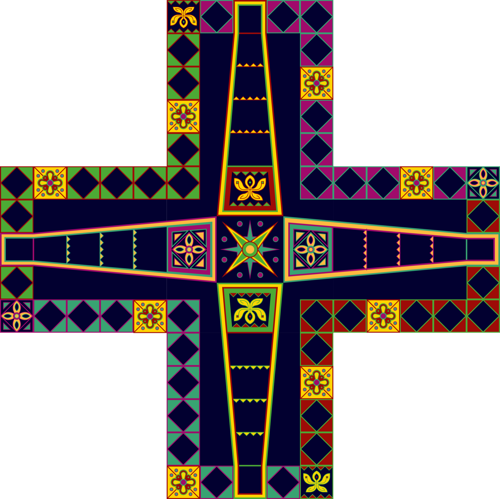
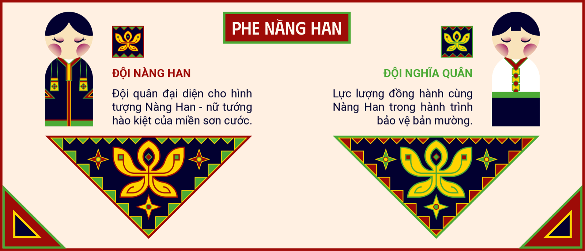
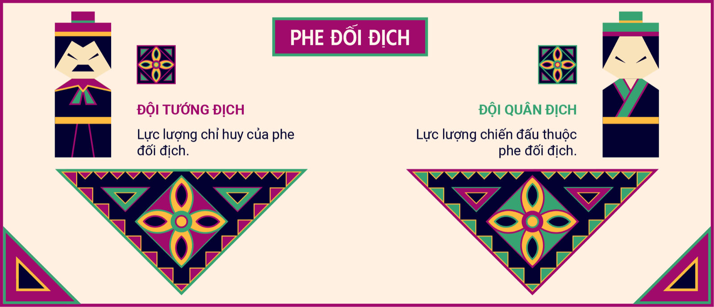
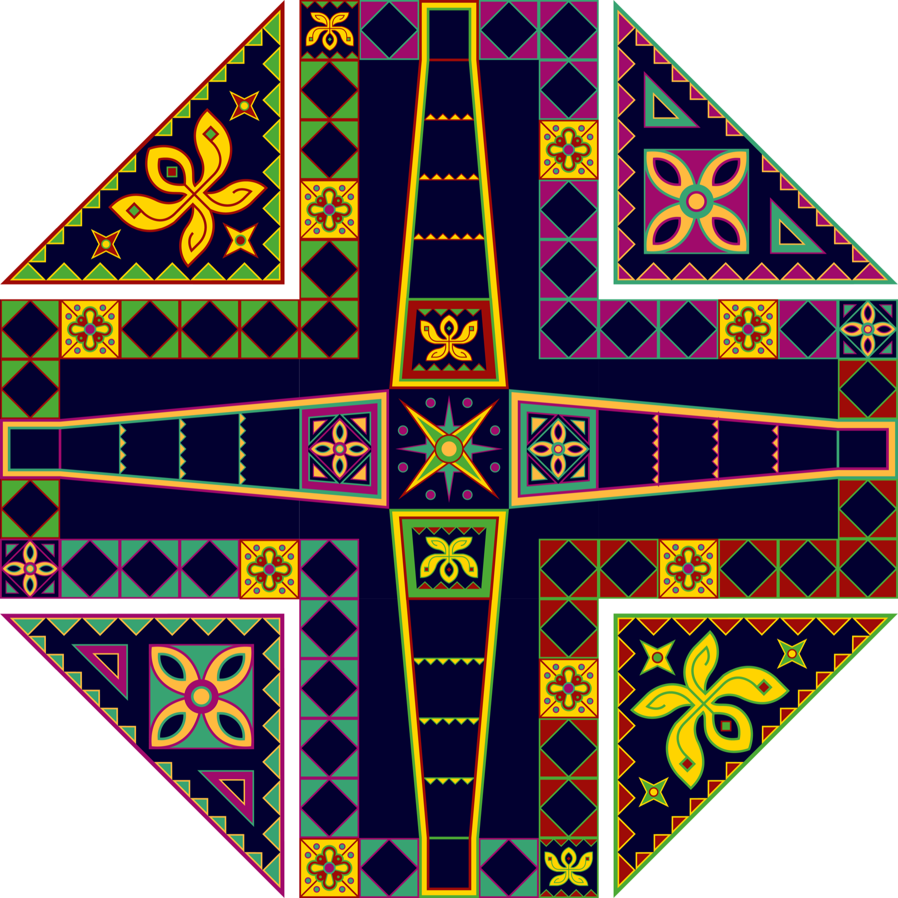
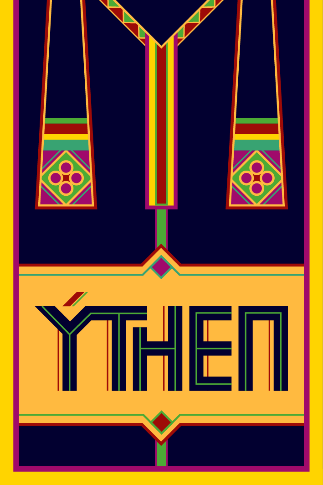

Xuất quân
Tung được 6 để đưa một quân ra ô bắt đầu. Sau khi ra quân, người chơi được tung thêm một lần.

Lấy nhịp chơi quen thuộc của cờ cá ngựa làm nền: mỗi phe có khu xuất phát và đường về đích riêng, còn các ô hoa tạo thêm biến số cho cuộc đua.

Trò chơi gồm hai phe và bốn đội. Mỗi đội sở hữu bốn quân cùng một thẻ đội tương ứng.


Tung được 6 để đưa một quân ra ô bắt đầu. Sau khi ra quân, người chơi được tung thêm một lần.
Mỗi lượt chọn một quân và đi đúng số ô trên xúc xắc.
Khi dừng đúng ô có quân đối thủ, quân đó bị đưa về khu đội và phải ra quân lại.
Khi dừng đúng ô hoa, rút lá trên cùng, đọc thành tiếng và thực hiện ngay công dụng trên thẻ.
Quân đi hết một vòng sẽ vào đường về đích. Người chơi cần tung đúng số bước còn thiếu.
Đội đầu tiên đưa đủ quân về đích thắng. Có thể chọn mốc hai quân cho một ván chơi ngắn.
Lời Then ban sẽ dẫn bạn đến đâu: là vận may hay điềm gở?
Chạm vào từng lá để xem công dụng. Dừng đúng ô hoa trên bàn cờ để rút một lá.
Chọn một tình huống để xem quân cờ, xúc xắc và thẻ bài hoạt động ngay trên bàn.

Ô hoa đặc biệt: dừng đúng ô để rút một thẻ và thực hiện công dụng trên thẻ ngay lập tức.
Chạm vào từng nút để xem một lượt chơi diễn ra: ra quân, di chuyển, rút thẻ và đá quân.
Trên điện thoại, chạm vào bàn cờ để mở các nút thao tác ngay trên bàn.
Chọn một tình huống để xem cách chơi diễn ra.
